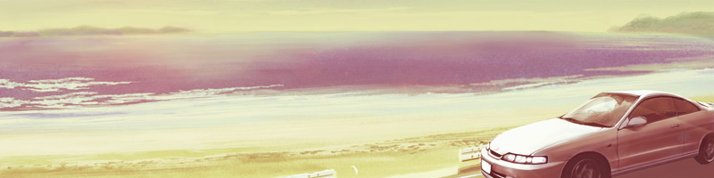
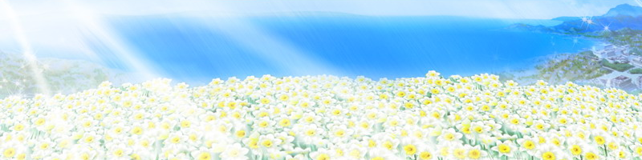

当太阳渐渐化作橙色的时候··· 无人的海滩上。 冰冷的强风摇动着松林。  驶入沙滩以后， 我将驾驶席让给了她。 「怎么样，踩得到离合器吗？」 「没问题···」 「好，然后把挡位由空挡换为二挡」 「···我知道的」 「好，那你就随意开一开吧」 「嗯，知道了···」 她拼命地伸腿踩着踏板。 我在助手席上指导着她。 「好···再慢慢松开离合器」 「嗯」 之后，她略显紧张地松开了离合器··· 「哇」 不出所料，车身剧烈地震动了一下。 「松开离合器的时候要慢一些」 「嗯」 尽管她这样回答， 但毕竟不会一下子就适应。 她轻轻地咬住嘴唇，认真地练习着。 因为平时很少将内心情感显露在表情上， 她现在的样子更使我感到无比的温馨。 「喂，再这样开下去的话，咱们可都要晕车了哦」 「我···我知道了」 因为消音器的故障，银色的酷派在噪音中奔跑着。 那啼哭般的噪音回荡在这片无人的沙滩上··· 当晚霞慢慢地变为夜空的时候。 当微弱的海风完全转为陆风的时候··· 巨大的月亮在天空中探出了头来。 「已经基本习惯了吧？」 「···嗯」 说着，她将挡位由2挡换为了3挡。 她终于习惯了离合器的操作， 在这狭窄的海滩上自由地驰骋着。 「能开到这一步的话···」 「大概用不着去驾校，你也可以考到驾照了哦」 「···是吗？」 「只是我的话并没有多少可信性。毕竟我也是刚拿到驾照的人嘛···」 我们都很清楚。 即使现在考到了驾照，也没有任何意义。 我们拥有地图，拥有药物， 也拥有银色的酷派—尽管消音器的故障让它显得很吵闹。 ···但我们没有时间，没有未来。 正因为心中明白这一切，我才更加感到哀伤。 「那么···就让我来为你发放驾照吧」 说着， 我从口袋中取出了自己的驾照。 那是···本已失去了作用的驾照， 「日常世界」的凭证··· 「给你，就当作是毕业证书吧」 「··········」 「就算收下···恐怕也没机会使用了···」 「别推辞了···反正我的情况也与你差不多嘛」 从没有任何人逃离过7楼的命运。 宽敞的房间，仅能拉开15cm的窗户，白色的塑料手环。 ···第3次将是最后一次，她是第2次，而我是第1次··· 「拿着吧···祝贺你毕业」 「嗯···谢谢···」 她微微点了点头后，接过了我的驾照。 ···现在，她也有了自己的驾照。 不光是酷派，她既可以驾驶赛旦，也可以驾驶康博芝布··· 可以驾驶任何自己喜欢的车辆。 可以到任何自己想去的地方去··· 驾车驰骋了一段时间后。 我们来到了当初的目的地—能够看到水仙的地方。 尽管这里是观光地··· 但或许因为这里是郊外， 或者因为现在是夜晚，总之周围看不到任何人活动的踪影。 夜色是如此的深沉。 我们在漆黑的车内等待着黎明。 「不开灯吗？」 「哦，因为电池的电量不多了」 「嗯，是啊···」 车内一片漆黑，引擎也被关闭了。 只有仪表盘上那淡淡的荧光，映照出我们的面庞。 在这既没有声响也没有灯光的狭窄车厢中， 我们默默地等待着黎明的到来。 那些衣物仍然堆放在后排的座位上。 肥厚的牛仔裤和运动衫，以及粗陋的浴巾。 我们从中捡起几件， 当做棉被卷在身上。 「···你冷吗？」 「···嗯」 「那就再靠近一些吧」 「诶···？」 「别在意，到这边来吧」 看到她在助手席上发抖， 我指了指自己的膝盖。 「这样肯定会比较暖和的」 「····」 「不用了···我没事的」 尽管嘴上这样说，但她却仍然在打着哆嗦。 呼出的白雾，说明她显然是在逞强。 「···莫非，你是因为冷才希望我过去的吗？」 「嗯···哦，就算是那样吧」 「·······」 「那么，好吧···」 她慢慢地挪了过来， 犹犹豫豫地趴在了我的膝上。 「怎么样？ 暖和些了吧？」 「···嗯」 挡风玻璃在寒气的作用下披上了一层白霜。 白雾与夜色交织着，使我完全看不到外边的景色。 但是，黎明很快就会来了。 那时，广阔的白色花丛一定会呈现在我们面前吧··· 夜色渐渐消逝。 旭日渐渐地将黑夜的深紫色染作了淡白色。 无垠的白色花丛在晨光中起伏着··· 本是漆黑一片的原野，被渐渐地涂成了白色与黄色。 我们不由得走出车外，注视着这幅美景。  「太美了···」 「···嗯」 浮现在眼前的，是数不清的水仙。 夜露在朝日的照耀下，让白色的花丛更显得晶莹剔透。 宛如一条铺向大海的巨大绒毯。 我们望着这一切交谈着。 连气息也化作了同样洁白的雾气。 ···那一天，我们在无聊的电视画面中眺望着那些花朵。 而今天，我们则确确实实地站在了这里。 「···它们可以说是同一种类了吧？」 「嗯···即使严格来说，也是同一种」 「是吗，太好了···」 我看不出种类的区别··· 那一天，电视中放映着的是完美绚丽的影像。 与那相比， 眼前的花朵们则显得零零散散。 ···但是，它们确确实实地存在于这里。 「好美啊···」 「···是啊」 现实是暧昧，乏味，平凡的··· 但是，它对任何人都是冷静而无情的。 世界中充满了眼睛看不到的虚无， 世界中充满了手指摸不到的幻影··· 但是现在，在这样的世界中， 真实的东西确确实实地呈现在了我们的眼前。 在它的面前，一切虚无与幻影都化作了碎片。1月31日 淡路岛雨不停地下着。 从1月的雪白天空不停地落下。 从那以后，已经过去两天了， 而我们却依然没有离开这里，没能够离开这里。 「喂，你没事吧？」 「嗯···大概没事」 她的病情恶化了。 她将坐席放倒，躺在那里。 我也一直将车停留在这里。 尽管已经吃下了药，但却没有什么效果， 病情仍然不见好转。 ···是啊，我们是来自7楼的人。 从原本的病情来看， 她已经是第2次了，随时都有可能迎来这一天。 「···你想回去吗？」 「·······」 「···那你呢？」 「嗯，有一点···」 「是7楼···还是家？」 「我、我···」 ···不知道··· 但我早有预料，她随时可能会迎来这一天。 当然，我也随时可能变成这样。 可是，仅仅在一旁看着，是很痛苦的事情。2月2日 淡路岛雨依然下个不停。 从昏暗的夜空中不断落下。 车窗对面， 水仙的花朵在雨滴中闪烁着洁白的光辉。 「对了···」 我指了指玻璃对面的白色花朵。 「记得水仙···是叫做narcissu吧？」 「···嗯，它来源于希腊神话中的那耳喀索斯」 「···希腊神话中的那耳喀索斯？」 我一直以为这是一个陌生的词汇。 但经她提醒，我才想起自己也有所耳闻··· 「就是那个陷入自恋的那耳喀索斯吗？」 「嗯，因为原本就是神话，所以有着各种各样不同的说法···」 她注视着我的脸， 慢慢地解说下去。 「那耳喀索斯是一位被万人追求的美少年···」 「妖精艾歌也是他的追求者之一」 「但是，艾歌只能重复与对方相同的话语···」 「···相同的话语？」 「是的，所以···」 「假如那耳喀索斯不对自己说出『我爱你』的话···」 「艾歌就永远无法传达自己的爱意···」 她寂寞地、悲伤地继续说道。 她的视线如同过去那样， 静静地遥望着远方。 「但是···那是绝对不可能的」 「无论怎样幻想，怎样憧憬，艾歌的心愿绝对不可能会实现···」 「最后，她对那耳喀索斯施下了诅咒」 「···就是那个有名的，爱上自己映在泉水中的倒影的诅咒吗？」 「那耳喀索斯不眠不休地凝视着自己的倒影···」 「就这样，化作了美丽的花朵」 「这种花的名字···narcissu就是这样诞生的」 说完，她整理了一下自己的呼吸。 听完这番讲解，我也感到了一丝悲伤。 ···对绝对无缘的事物抱持憧憬的艾歌， 就如同现在的我们一样。 「那么艾歌又怎么样了呢？」 「已经不在了···在施下诅咒的那一刻，她就消失了」 消失了？ 这样一来岂不就毫无意义了吗··· 狠心施下了诅咒，最终却什么也没能得到， 仅仅是给那耳喀索斯带去不幸··· 「···你怎么了？」 「没什么···不过，你与她不同啊」 「诶···？」 「你以前不是问过我吗」 「是否诅咒过自己那不公的命运···」 「·······」 「嗯···因为我早已放弃了一切」在这个只看得到自己的世界里··· 我送走了不知多少个季节···多少次下着梅雨的苍白天空··· 究竟是从何时开始，我变得如此孤独了呢··· 「尽管闭上双眼，身边的世界也不会就此消失··· 即使堵住耳朵，雨声也不会停止。 我心里很清楚这一切。 无论是比基尼泳装，翡翠色的大海， 还是满脸微笑的偶像封面··· 都不会使我感到嫉妒。 在闭上双眼的世界中 即使没有车和地图，我同样可以漫步于任何城镇。 即使没有心口的伤痕在时刻提醒着我， 即使这世界就是那耳喀索斯的化身，而我则扮演着艾歌··· 即使如此，我也不会去憧憬他···更不会去诅咒他··· 我本已选择了这条道路··· 但现在··· 我的心却动摇了。 冰冻的时间再次开始了跃动。 伤口· 越是深，越是重，愈合所需的时间也就会越久··· 那么，长久以来慢慢分开的东西，是否就再也无法复原了呢？ 那样的话··· 已经活了22年的我，究竟又会如何呢··· 「咳···」 「喂，没事吧」 黎明前。 我将手伸向助手席，为她揉着背。 从那以后又过去了两天， 连那不见效果的药物也已经服尽了。 ···但是，即使是那种药，也总比什么都没有强得多。 想到这里， 我将手伸向车的钥匙，准备赶往药店。 正当我打算发动引擎的时候··· 「不必了」 她用微弱的声音制止了我。 「但是，这样下去的话···」 「反正，已经没有效果了」 「可是···」 她说得没错。 同样的药物恐怕已经没有疗效了。 但是，即使如此， 我也难以忍受自己只是这样在一旁看着。 「那么，咱们到别的地方去吧」 「别的地方？」 「嗯，别总是待在这种偏僻的地方嘛」 「咱们快决定下一个目的地吧」 「····」 「哪里都可以的，还是要由你来指路」 假装开朗的生硬语气让我自己也感到可笑。 她静静地眺望着远方， 我则在一旁故作爽朗地劝说着··· ···尽管我很清楚，这样做是没有意义的。 最多也只不过是把剩余的两天变成三天而已。 这一切我都很清楚。 「说说看吧，你肯定有想去的地方吧？」 「不···」 「对、对了，你不是喜欢车吗。 想不想再到高速公路上去跑一跑啊？」 「不···」 「······」 「那么，咱们去买新衣服吧。你肯定想要吧？」 「不···」 「你怎么总是『不』、『不』、『不』的···为什么···」 说完，她便再次眺望着窗外。 并非是在看着面前那无垠的水仙花丛， 而是像从前那样，眺望着远方。 她偶尔也会显露出那好似害羞又好似倔强的表情。 到现在，她的脸上已不再有什么表情了··· 「为、为什么要这样啊···」 「为什么总是这么消极···」 「····」 「为什么就不能稍微积极一些呢」 我不由得喊出了声。 不知为何···我很悲伤。 原本早已失去了对现实的感触。但现在，我的内心却异常痛苦。 ···车内沉静了下来 窗外那1月的花朵，水仙，narcissu··· 在黎明前的夜色中摇动着它洁白的花瓣。 但她注视着的却不是那白色的花朵， 而是更远、更远的地方。 只有那远远传来的海潮声，支配了周围的寂静··· 「我又怎么可能变得积极呢···」 「诶···？」 昏暗的车内 她忽然开口了 「对事物充满憧憬，努力地追求 假如心愿真的能够实现，当然很好···」 「但是，假如无法实现的话，又该如何呢？」 「我根本没有那么坚强， 能够微笑着安慰自己···」 她没有像往常那样眺望着远方， 而是从助手席上静静地凝视着我。 「我所能做的，只有从一开始就放弃一切，不去追求任何事物···」 「我只能告诫自己，这是不可能的， 只能够以冷漠的眼光来旁观着自己啊···」 「你···」 她第一次哭泣了 平时，她很少显露出自己的表情··· 但现在，她却抖动着肩膀哭泣着 「我只能对自己说···假如那个时候试着去追求过···或许就会有不同的结果···」 「只能讲这些作为对自己最后的安慰啊···」 「因为我从一开始就明白了一切都是不可能实现的···」 「所以···我只能选择这样做啊···」 玻璃的另一侧是无尽的夜空 在这黎明前的时刻，连月亮也不见了踪影 只能听到远处的海潮声 和她低沉的哭泣声 或许，她的境遇正如艾歌一样吧 只能够重复与他人相同的话语 自己却什么也无法倾诉，什么也无法追求，什么也不会关心··· 她所能做的，只有放弃 对她来说，拒绝从7楼和自己的家中进行选择··· 或许···
这就是最初也是最后的反抗吧
第七章 ナルキッソス